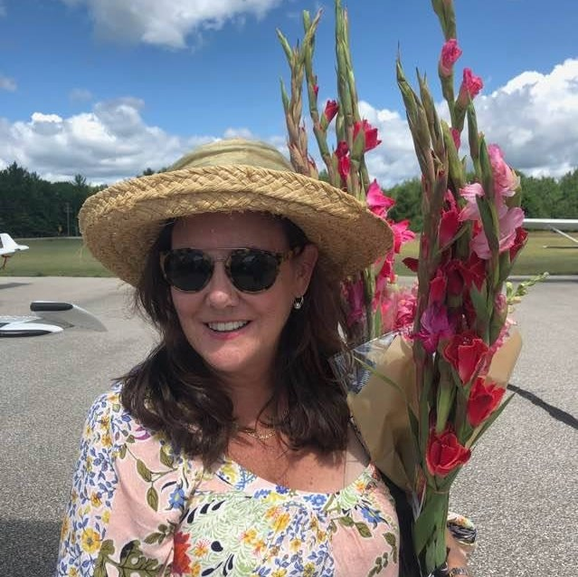

Janie Fleckenstein is an artist who resides in Bloomfield Hills, Michigan. She specializes in both oil painting and pottery and paints in a naturalistic and impressionistic style.
In 1988, Janie graduated from the University of Michigan with a Bachelor of Fine Arts and Art History. She then refined her knowledge of the art world by working at the Flint Institute of Arts as assisant to director. Later in her career, she began giving classes in many mediums, including oil painting, watercolor, ceramics and jewelry.
Her work is often featured at the Birmingham Bloomfield Arts Center (BBAC) where she work as an art teacher.
Biographical Information
Education
University of Michigan, BFA 1988
Mediums
Oil, pastels
Professional Work
BBAC Art Teacher